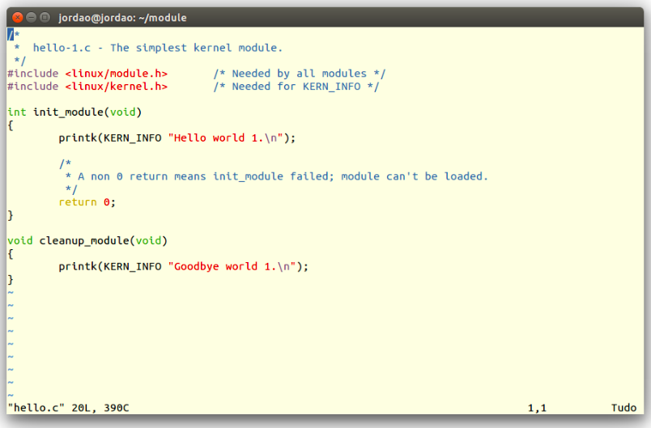

What exactly is a kernel module? Modules are pieces of code that can be loaded and unloaded into the kernel upon demand. They extend the functionality of the kernel without the need of rebooting the system. For example, one type of module is the device driver, which allows the kernel to access hardware connected to the system. You can see what modules are already loaded into the kernel by running lsmod.
The Simplest Module
Kernel modules must have at least two functions: a "start" (initialization) function called init_module() which is called when the module is insmoded into the kernel, and an "end" (cleanup) function called cleanup_module() which is called just before it is rmmoded. Typically, init_module() either registers a handler for something with the kernel, or it replaces one of the kernel functions with its own code (usually code to do something and then call the original function). The cleanup_module() function is supposed to undo whatever init_module() did, so the module can be unloaded safely.
It is to be a logging mechanism for the kernel, and is used to log information or give warnings. Therefore, each printk() statement comes with a priority, which is the <1> and KERN_ALERT you see. There are 8 priorities and the kernel has macros for them, so you don't have to use cryptic numbers, and you can view them (and their meanings) in linux/kernel.h. If you don't specify a priority level, the default priority, DEFAULT_MESSAGE_LOGLEVEL, will be used.
If the priority is less than int console_loglevel, the message is printed on your current terminal. If both syslogd and klogd are running, then the message will also get appended to /var/log/messages, whether it got printed to the console or not. We use a high priority, like KERN_ALERT, to make sure the printk() messages get printed to your console rather than just logged to your logfile. When you write real modules, you'll want to use priorities that are meaningful for the situation at hand.
Kernel modules need to be compiled a bit differently from regular userspace apps. Former kernel versions required us to care much about these settings, which are usually stored in Makefiles. Although hierarchically organized, many redundant settings accumulated in sublevel Makefiles and made them large and rather difficult to maintain.
So, let's look at a simple Makefile for compiling a module named hello.c:
Now you can compile the module by issuing the command make.
Use modinfo hello.ko to see what kind of information it is.
Now as root it is time to insert your freshly-compiled module it into the kernel with insmod ./hello.ko
All modules loaded into the kernel are listed in /proc/modules. When the novelty wears off, remove your module from the kernel by using rmmod hello. Take a look at /var/log/messages just to see that it got logged to your system logfile.
As of Linux 2.4, you can rename the init and cleanup functions of your modules; they no longer have to be called init_module() and cleanup_module() respectively. This is done with the module_init() and module_exit() macros. These macros are defined in linux/init.h.
Adding makefile for both our modules is as simple as this:
Hello World (part 3): The __init and __exit Macros
References